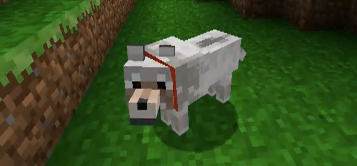
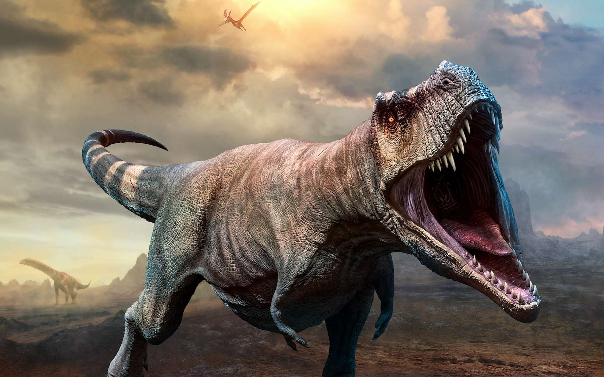

Chat

Il est l’un des principaux animaux de compagnie et compte aujourd’hui une cinquantaine de races différentes reconnues par les instances de certification. Dans de très nombreux pays, le chat entre dans le cadre de la législation sur les carnivores domestiques à l’instar du chien et du furet. Essentiellement territorial, le chat est un prédateur de petites proies comme les rongeurs ou les oiseaux. Les chats ont diverses vocalisations dont les ronronnements, les miaulements, les feulements ou les grognements, bien qu’ils communiquent principalement par des positions faciales et corporelles et des phéromones.
Chien
Les chiens sont avant tout des loups apprivoisés. On les reconnait a leur collier de couleur, rouge par défaut mais il peut être teint de n'importe quelle couleur à l'aide de colorants. Vos chiens vous suivront partout dans vos déplacements, y compris a travers les portails vers les autres mondes. Vous pourrez leur ordonner de rester sur place en faisant un clic droit dessus pour les faire s'assoir. Les chiens seront votre parfait compagnon de chasse : tapez une fois sur votre cible et tous vos chiens iront l'attaquer jusqu'à sa mort ! Les chiens sont fragile, il faudra les soigner régulièrement en leur donnant de la viande à manger.
T-Rex
Tyrannosaurus, communément appelé tyrannosaure, est un genre éteint de dinosaures théropodes appartenant à la famille des Tyrannosauridae et ayant vécu durant la partie supérieure du Maastrichtien, dernier étage du système Crétacé1, il y a environ 68 à 66 millions d'années2, dans ce qui est actuellement l'Amérique du Nord. Tyrannosaurus rex, dont l'étymologie du nom signifie « roi des lézards tyrans », est l'une des plus célèbres espèces de dinosaures et l'unique espèce de Tyrannosaurus si le taxon Tarbosaurus bataar n'est pas considéré comme faisant partie du même genre. Tyrannosaurus fut l'un des derniers dinosaures non-aviens à avoir vécu jusqu'à l'extinction survenue à la limite Crétacé-Paléogène il y a 66 millions d'années.